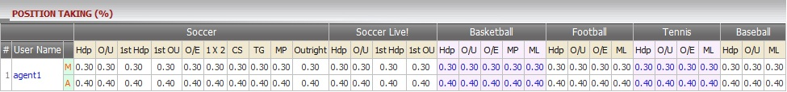
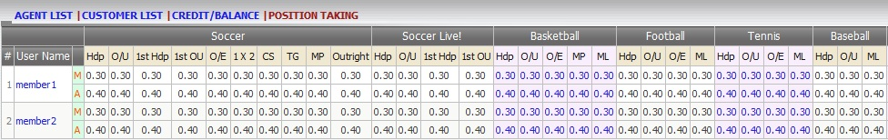
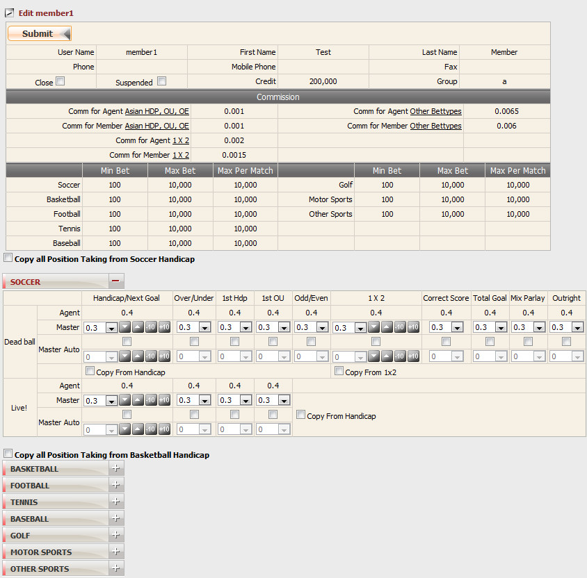

Position Taking
Definition:
Show the initial Position Taking Master takes when creating an agent and the maximum position taking that Agent can take on member.

figure 1.1
If you want to view the actual position taking that master/agent take on each member based on each sport type and bet type, click on the Agent username (figure 1.2).

figure 1.2
How to edit position taking:
Click on member's username to edit position taking.

figure 1.3
Note:
- Master PT + Agent PT <= Master Max PT set by upline.
- Master PT + Agent PT >= Master Min PT set by upline.
- Master can set position taking for each bet type on each sport type or use the setting of Soccer/Basketball to apply for other sport types, bet types.
- For Deadball betting:
-
Copy from Handicap then apply to Over/Under, 1st HDP, 1st Over/Under, Odd/Even bet types.
-
Copy from 1x2 then apply to Correct Score, Total Goal, Mix Parlay, Out Right bet types.
- For Live betting: copy from Handicap then apply to Over/Under, 1st HDP, 1st Over/Under bet types.